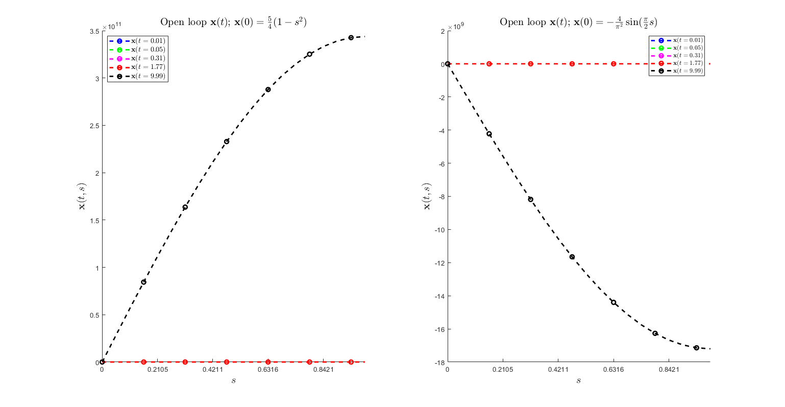
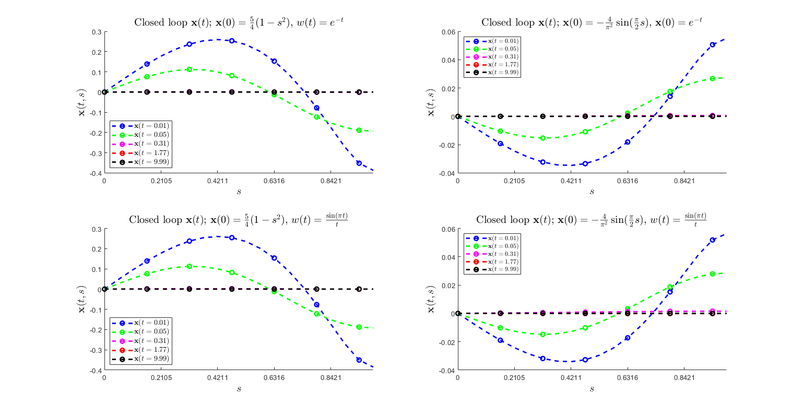
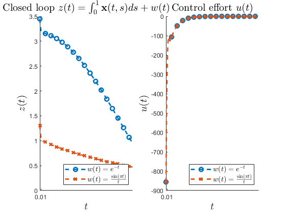

Contents
% DEMO6_Hinf_optimal_control.m % See Chapter 11.6 of the manual for a description. % % This document illustrates how an Hinfty optimal controller can be designed % for a PDE using the PIE/LPI framework. % % We consider the system defined by: % PDE: \dot{x}(t,s) = (d^2/ds^2) x(t,s) + lam x(t,s) + w(t) + u(t), s in [0,1]; % Outputs: z(t) = [int_{0}^{1} x(t,s) ds + w(t); u(t)]; % BCs: 0 = x(t,0) = d/ds x(t,1); % (unstable for lam > pi^2/4) % % Letting v:=(d^2/ds^2)x, We derive an equivalent PIE of the form: % [T \dot{v}](t,s) = [A v](t,s) + [B1 w](t,s) + [B2 u](t,s); % z(t) = [C1 v](t) + [D11 w](t) + [D12 u](t); % % Using a state feedback control u = Kv we get the closed loop PIE % [T \dot{v}](t,s) = [(A + B2*K) v](t,s) + [B1 w](t,s); % z(t) = [(C1 + D12*K) v](t) + [D11 w](t) % % We wish to compute an operator K that minimizes the L2 gain from % disturbances w to the output z. This is achieved solving % the LPI % % min_{gam,P,Z} gam % s.t. P>=0 % [ -gam*I D11 (C1*P+D12*Z)*T' ] % [ D11' -gam*I B1' ] <= 0 % [ T*(C1*P+D12*Z) B1 (A*P+B2*Z)*T'+T*(A*P+B2*Z)'] % % If the above LPI is successfully solved, then for K = Z*P^{-1}, we have % ||z||_{L2}/||w||_{L2} <= gam % % We manually declare this LPI here, but it can also be solved using the % "PIETOOLS_Hinf_control" executive file. % We simulate the open loop and closed loop response of the PDE for various % IC using PIESIM. %
clc; clear; close all; echo on %%%%%%%%%%%%%%%%%% Start Code %%%%%%%%%%%%%%%%%%
- - - - - - - - - - - - - - - - - - - - - - - - - - - - - - - - - - - %%
% % Declare the PDE, and convert it to a PIE. Declare the PDE using command line parser
pvar s t lam = 5; PDE = sys(); x = state('pde'); w = state('in'); z = state('out', 2); u = state('in'); eqs = [diff(x,t) == diff(x,s,2) + lam*x + s*w + s*u; z == [int(x,s,[0,1]); u]; subs(x,s,0)==0; subs(diff(x,s),s,1)==0]; PDE = addequation(PDE,eqs); PDE = setControl(PDE,u); display_PDE(PDE); % Compute the associated PIE, and extract the operators. PIE = convert(PDE,'pie'); PIE = PIE.params; T = PIE.T; A = PIE.A; C1 = PIE.C1; B2 = PIE.B2; B1 = PIE.B1; D11 = PIE.D11; D12 = PIE.D12;
%%%%%%%%%%%%%%%%%% Start Code %%%%%%%%%%%%%%%%%%
%% - - - - - - - - - - - - - - - - - - - - - - - - - - - - - - - - - - - %%
% % % Declare the PDE, and convert it to a PIE.
% Declare the PDE using command line parser
pvar s t
lam = 5;
PDE = sys();
Initialized sys() object of type "pde"
x = state('pde'); w = state('in');
z = state('out', 2); u = state('in');
eqs = [diff(x,t) == diff(x,s,2) + lam*x + s*w + s*u;
z == [int(x,s,[0,1]); u];
subs(x,s,0)==0;
subs(diff(x,s),s,1)==0];
PDE = addequation(PDE,eqs);
5 equations were added to sys() object
PDE = setControl(PDE,u);
1 inputs were designated as controlled inputs
display_PDE(PDE);
∂ₜ x(t,s) = ∂²ₛ x(t,s) + 5 * x(t,s) + C₁₃(s) * w(t) + C₁₄(s) * u(t);
z(t) = ₀∫¹[C₂₁ * x(t,s)]ds + C₂₂ * u(t);
0 = - x(t,0);
0 = - ∂ₛ x(t,1);
Call "PDE.C{i,j}" to see the value of coefficients Cᵢⱼ as in the displayed equations.
% Compute the associated PIE, and extract the operators.
PIE = convert(PDE,'pie'); PIE = PIE.params;
--- Reordering the state components to allow for representation as PIE ---
--- Converting ODE-PDE to PIE ---
Initialized sys() object of type "pde"
Conversion to pie was successful
T = PIE.T;
A = PIE.A; C1 = PIE.C1; B2 = PIE.B2;
B1 = PIE.B1; D11 = PIE.D11; D12 = PIE.D12;
- - - - - - - - - - - - - - - - - - - - - - - - - - - - - - - - - - - %%
% % Compute an optimal observer operator L for the PIE.
use_executive = false; % <-- set to true to use predefined executive if use_executive % % Use the predefined Hinf estimator executive function. settings = lpisettings('heavy'); [prog, Kval, gam_val] = PIETOOLS_Hinf_control(PIE, settings); else % % Manually construct and solve the LPI program for optimal % % estimator synthesis. % Initialize the LPI program vars = PIE.vars(:); prog = sosprogram(vars); % Declare the decision variable gamma dpvar gam; prog = sosdecvar(prog, gam); % Declare a positive semidefinite PI operator decision variable P>=0 Pdim = T.dim(:,1); Pdom = PIE.dom; Pdeg = {2,[1,1,2],[1,1,2]}; opts.sep = 0; [prog,P] = poslpivar(prog,Pdim,Pdom,Pdeg,opts); eppos = 1e-3; P.R.R0 = P.R.R0 + eppos*eye(size(P.R.R0)); % Declare the indefinite PI operator decision variable Z Zdim = B2.dim(:,[2,1]); Zdom = PIE.dom; Zdeg = [4,0,0]; [prog,Z] = lpivar(prog,Zdim,Zdom,Zdeg); % Declare the LPI constraint Q<=0. nw = size(B1,2); nz = size(C1,1); Q = [-gam*eye(nz) D11 (C1*P+D12*Z)*(T'); D11' -gam*eye(nw) B1'; T*(C1*P+D12*Z)' B1 (A*P+B2*Z)*(T')+T*(A*P+B2*Z)']; prog = lpi_ineq(prog,-Q); % Set the objective function: minimize gam prog = sossetobj(prog, gam); % Solve the optimization program opts.solver = 'sedumi'; opts.simplify = true; prog_sol = sossolve(prog,opts); % Extract the solved value of gam and the operators P and Z gam_val = sosgetsol(prog_sol,gam); Pval = getsol_lpivar(prog_sol,P); Zval = getsol_lpivar(prog_sol,Z); % Build the optimal observer operator K. Kval = getController(Pval,Zval,1e-3); end
%% - - - - - - - - - - - - - - - - - - - - - - - - - - - - - - - - - - - %%
% % % Compute an optimal observer operator L for the PIE.
use_executive = false; % <-- set to true to use predefined executive
if use_executive
else
% % Manually construct and solve the LPI program for optimal
% % estimator synthesis.
% Initialize the LPI program
vars = PIE.vars(:);
prog = sosprogram(vars);
% Declare the decision variable gamma
dpvar gam;
prog = sosdecvar(prog, gam);
% Declare a positive semidefinite PI operator decision variable P>=0
Pdim = T.dim(:,1);
Pdom = PIE.dom;
Pdeg = {2,[1,1,2],[1,1,2]};
opts.sep = 0;
[prog,P] = poslpivar(prog,Pdim,Pdom,Pdeg,opts);
eppos = 1e-3;
P.R.R0 = P.R.R0 + eppos*eye(size(P.R.R0));
% Declare the indefinite PI operator decision variable Z
Zdim = B2.dim(:,[2,1]);
Zdom = PIE.dom;
Zdeg = [4,0,0];
[prog,Z] = lpivar(prog,Zdim,Zdom,Zdeg);
% Declare the LPI constraint Q<=0.
nw = size(B1,2); nz = size(C1,1);
Q = [-gam*eye(nz) D11 (C1*P+D12*Z)*(T');
D11' -gam*eye(nw) B1';
T*(C1*P+D12*Z)' B1 (A*P+B2*Z)*(T')+T*(A*P+B2*Z)'];
prog = lpi_ineq(prog,-Q);
% Set the objective function: minimize gam
prog = sossetobj(prog, gam);
% Solve the optimization program
opts.solver = 'sedumi';
opts.simplify = true;
prog_sol = sossolve(prog,opts);
Running simplification process:
Old A size: 4223 356
New A size: 4096 355
Size: 4096 355
SeDuMi 1.3 by AdvOL, 2005-2008 and Jos F. Sturm, 1998-2003.
Alg = 2: xz-corrector, Adaptive Step-Differentiation, theta = 0.250, beta = 0.500
Put 6 free variables in a quadratic cone
eqs m = 355, order n = 77, dim = 4098, blocks = 4
nnz(A) = 11192 + 0, nnz(ADA) = 126025, nnz(L) = 63190
it : b*y gap delta rate t/tP* t/tD* feas cg cg prec
0 : 1.12E+01 0.000
1 : 6.37E-01 3.08E+00 0.000 0.2749 0.9000 0.9000 1.14 1 1 1.4E+01
2 : 9.00E-01 9.88E-01 0.000 0.3205 0.9000 0.9000 1.08 1 1 4.5E+00
3 : 1.03E+00 2.48E-01 0.000 0.2513 0.9000 0.9000 0.99 1 1 1.1E+00
4 : 1.01E+00 5.95E-02 0.000 0.2395 0.9000 0.9000 1.24 1 1 2.3E-01
5 : 1.00E+00 1.42E-02 0.000 0.2381 0.9000 0.9000 1.16 1 1 5.1E-02
6 : 1.00E+00 3.38E-03 0.000 0.2390 0.9000 0.9000 1.09 1 1 1.2E-02
7 : 1.00E+00 9.01E-04 0.000 0.2661 0.9000 0.9000 1.12 1 1 2.9E-03
8 : 1.00E+00 2.53E-04 0.000 0.2813 0.9000 0.9000 1.11 1 1 7.7E-04
9 : 1.00E+00 7.15E-05 0.000 0.2824 0.9000 0.9000 1.09 1 1 2.1E-04
10 : 1.00E+00 1.96E-05 0.000 0.2739 0.9000 0.9000 1.06 1 1 5.5E-05
11 : 1.00E+00 5.67E-06 0.000 0.2895 0.9000 0.9000 1.07 1 1 1.5E-05
12 : 1.00E+00 1.52E-06 0.000 0.2678 0.9000 0.9000 1.04 1 2 4.0E-06
13 : 1.00E+00 4.87E-07 0.000 0.3202 0.9001 0.9000 0.93 2 2 1.4E-06
14 : 1.00E+00 1.13E-07 0.109 0.2327 0.9000 0.0000 0.78 2 2 6.2E-07
15 : 1.00E+00 3.20E-08 0.228 0.2826 0.9000 0.0000 0.73 3 3 3.1E-07
16 : 1.00E+00 2.32E-08 0.048 0.7248 0.9000 0.9000 0.65 3 3 2.4E-07
17 : 1.00E+00 8.88E-09 0.341 0.3828 0.9000 0.0000 0.54 4 3 1.5E-07
18 : 1.00E+00 6.51E-09 0.000 0.7329 0.9000 0.9243 0.57 5 4 1.1E-07
19 : 1.00E+00 2.86E-09 0.000 0.4403 0.9000 0.9087 0.26 9 9 6.1E-08
Run into numerical problems.
iter seconds digits c*x b*y
19 2.1 7.5 1.0012674324e+00 1.0012674670e+00
|Ax-b| = 7.6e-08, [Ay-c]_+ = 9.1E-09, |x|= 2.7e+01, |y|= 1.5e+03
Detailed timing (sec)
Pre IPM Post
1.599E-02 7.780E-01 0.000E+00
Max-norms: ||b||=1, ||c|| = 1,
Cholesky |add|=0, |skip| = 176, ||L.L|| = 3.30744e+07.
Residual norm: 7.6207e-08
iter: 19
feasratio: 0.2551
pinf: 0
dinf: 0
numerr: 1
timing: [0.0160 0.7780 0]
wallsec: 0.7940
cpusec: 2.1250
% Extract the solved value of gam and the operators P and Z
gam_val = sosgetsol(prog_sol,gam);
Pval = getsol_lpivar(prog_sol,P);
Zval = getsol_lpivar(prog_sol,Z);
% Build the optimal observer operator K.
Kval = getController(Pval,Zval,1e-3);
end
- - - - - - - - - - - - - - - - - - - - - - - - - - - - - - - - - - - %%
% Construct the operators defining the PIE. use_CL_function = false; if use_CL_function PIE_CL = closedLoopPIE(PIE,Kval); else T_CL = T; A_CL = A+B2*Kval; B_CL = B1; C_CL = C1+D12*Kval; D_CL = D11; % Declare the PIE. PIE_CL = pie_struct(); PIE_CL.vars = PIE.vars; PIE_CL.dom = PIE.dom; PIE_CL.T = T_CL; PIE_CL.A = A_CL; PIE_CL.B1 = B_CL; PIE_CL.C1 = C_CL; PIE_CL.D11 = D_CL; PIE_CL = initialize(PIE_CL); end
%% - - - - - - - - - - - - - - - - - - - - - - - - - - - - - - - - - - - %%
% Construct the operators defining the PIE.
use_CL_function = false;
if use_CL_function
else
T_CL = T;
A_CL = A+B2*Kval; B_CL = B1;
C_CL = C1+D12*Kval; D_CL = D11;
% Declare the PIE.
PIE_CL = pie_struct();
PIE_CL.vars = PIE.vars;
PIE_CL.dom = PIE.dom;
PIE_CL.T = T_CL;
PIE_CL.A = A_CL; PIE_CL.B1 = B_CL;
PIE_CL.C1 = C_CL; PIE_CL.D11 = D_CL;
PIE_CL = initialize(PIE_CL);
end
- - - - - - - - - - - - - - - - - - - - - - - - - - - - - - - - - - - %%
% % Simulate and plot the actual and estimated PDE state using PIESIM
% Declare initial conditions for the state components of the PIE syms st sx real % Set options for the discretization and simulation: opts.plot = 'no'; % Do not plot the final solution opts.N = 8; % Expand using 8 Chebyshev polynomials opts.tf = 10; % Simulate up to t = 10; opts.dt = 1e-2; % Use time step of 10^-2 opts.intScheme=1; % Time-step using Backward Differentiation Formula (BDF) ndiff = [0,0,1]; % The PDE state involves 1 second order differentiable state variables % Simulate the solution to the PIE without controller for different IC. uinput.ic.PDE = -10*sx; % IC PIE uinput.w = exp(-st); % disturbance [solution_OL_a,grid] = PIESIM(PIE,opts,uinput,ndiff); uinput.ic.PDE = sin(sx*pi/2); % IC PIE [solution_OL_b,grid] = PIESIM(PIE,opts,uinput,ndiff); % Simulate the solution to the PIE with controller for different IC and disturbance. uinput.ic.PDE = -10*sx; % IC PIE uinput.w = exp(-st); % disturbance [solution_CL_a,grid] = PIESIM(PIE_CL,opts,uinput,ndiff); uinput.ic.PDE = sin(sx*pi/2); % IC PIE uinput.w = exp(-st); % disturbance [solution_CL_b,grid] = PIESIM(PIE_CL,opts,uinput,ndiff); uinput.ic.PDE = -10*sx; % IC PIE uinput.w = sin(pi*st)./(st+eps); % disturbance [solution_CL_aa,grid] = PIESIM(PIE_CL,opts,uinput,ndiff); uinput.ic.PDE = sin(sx*pi/2); % IC PIE uinput.w = sin(pi*st)./(st+eps); % disturbance [solution_CL_ab,grid] = PIESIM(PIE_CL,opts,uinput,ndiff);
%% - - - - - - - - - - - - - - - - - - - - - - - - - - - - - - - - - - - %% % % % Simulate and plot the actual and estimated PDE state using PIESIM % Declare initial conditions for the state components of the PIE syms st sx real % Set options for the discretization and simulation: opts.plot = 'no'; % Do not plot the final solution opts.N = 8; % Expand using 8 Chebyshev polynomials opts.tf = 10; % Simulate up to t = 10; opts.dt = 1e-2; % Use time step of 10^-2 opts.intScheme=1; % Time-step using Backward Differentiation Formula (BDF) ndiff = [0,0,1]; % The PDE state involves 1 second order differentiable state variables % Simulate the solution to the PIE without controller for different IC. uinput.ic.PDE = -10*sx; % IC PIE uinput.w = exp(-st); % disturbance [solution_OL_a,grid] = PIESIM(PIE,opts,uinput,ndiff); Warning: option Norder is not defined. Setting to a default value of 2 Solving PIE problem Warning: control inputs are not defined. Defaulting to zero Initial conditions on ODE states are not defined. Defaulting to 1 Too many initial conditions are defined. Ignoring extra conditions Setting up Chebyshev matrices for the PIE system Setup completed: integrating in time Time integration scheme is numerically unstable for the given problem. Try increasing time step to 1.579 or decreasing an order of the scheme (opts.Norder). Value of a regulated output 1 at a final time 10.000000 is 224492598238.5131 Value of a regulated output 2 at a final time 10.000000 is 0.0000 uinput.ic.PDE = sin(sx*pi/2); % IC PIE [solution_OL_b,grid] = PIESIM(PIE,opts,uinput,ndiff); Warning: option Norder is not defined. Setting to a default value of 2 Solving PIE problem Warning: control inputs are not defined. Defaulting to zero Initial conditions on ODE states are not defined. Defaulting to 1 Too many initial conditions are defined. Ignoring extra conditions Setting up Chebyshev matrices for the PIE system Setup completed: integrating in time Time integration scheme is numerically unstable for the given problem. Try increasing time step to 1.579 or decreasing an order of the scheme (opts.Norder). Value of a regulated output 1 at a final time 10.000000 is -11232144190.8885 Value of a regulated output 2 at a final time 10.000000 is 0.0000 % Simulate the solution to the PIE with controller for different IC and disturbance. uinput.ic.PDE = -10*sx; % IC PIE uinput.w = exp(-st); % disturbance [solution_CL_a,grid] = PIESIM(PIE_CL,opts,uinput,ndiff); Warning: option Norder is not defined. Setting to a default value of 2 Solving PIE problem Warning: control inputs are not defined. Defaulting to zero Initial conditions on ODE states are not defined. Defaulting to 1 Too many initial conditions are defined. Ignoring extra conditions Setting up Chebyshev matrices for the PIE system Setup completed: integrating in time Time integration scheme is numerically stable for the given problem. Any observed instabilities must be physical. Value of a regulated output 1 at a final time 10.000000 is 0.0000 Value of a regulated output 2 at a final time 10.000000 is -0.0000 uinput.ic.PDE = sin(sx*pi/2); % IC PIE uinput.w = exp(-st); % disturbance [solution_CL_b,grid] = PIESIM(PIE_CL,opts,uinput,ndiff); Warning: option Norder is not defined. Setting to a default value of 2 Solving PIE problem Warning: control inputs are not defined. Defaulting to zero Initial conditions on ODE states are not defined. Defaulting to 1 Too many initial conditions are defined. Ignoring extra conditions Setting up Chebyshev matrices for the PIE system Setup completed: integrating in time Time integration scheme is numerically stable for the given problem. Any observed instabilities must be physical. Value of a regulated output 1 at a final time 10.000000 is 0.0000 Value of a regulated output 2 at a final time 10.000000 is -0.0000 uinput.ic.PDE = -10*sx; % IC PIE uinput.w = sin(pi*st)./(st+eps); % disturbance [solution_CL_aa,grid] = PIESIM(PIE_CL,opts,uinput,ndiff); Warning: option Norder is not defined. Setting to a default value of 2 Solving PIE problem Warning: control inputs are not defined. Defaulting to zero Initial conditions on ODE states are not defined. Defaulting to 1 Too many initial conditions are defined. Ignoring extra conditions Setting up Chebyshev matrices for the PIE system Setup completed: integrating in time Time integration scheme is numerically stable for the given problem. Any observed instabilities must be physical. Value of a regulated output 1 at a final time 10.000000 is 0.0000 Value of a regulated output 2 at a final time 10.000000 is 0.0002 uinput.ic.PDE = sin(sx*pi/2); % IC PIE uinput.w = sin(pi*st)./(st+eps); % disturbance [solution_CL_ab,grid] = PIESIM(PIE_CL,opts,uinput,ndiff); Warning: option Norder is not defined. Setting to a default value of 2 Solving PIE problem Warning: control inputs are not defined. Defaulting to zero Initial conditions on ODE states are not defined. Defaulting to 1 Too many initial conditions are defined. Ignoring extra conditions Setting up Chebyshev matrices for the PIE system Setup completed: integrating in time Time integration scheme is numerically stable for the given problem. Any observed instabilities must be physical. Value of a regulated output 1 at a final time 10.000000 is 0.0000 Value of a regulated output 2 at a final time 10.000000 is 0.0002
Extract actual solution at each time step.
tval = solution_OL_a.timedep.dtime; x_OL_a = reshape(solution_OL_a.timedep.pde(:,1,:),opts.N+1,[]); x_OL_b = reshape(solution_OL_b.timedep.pde(:,1,:),opts.N+1,[]); x_CL_a = reshape(solution_CL_a.timedep.pde(:,1,:),opts.N+1,[]); x_CL_b = reshape(solution_CL_b.timedep.pde(:,1,:),opts.N+1,[]); x_CL_aa = reshape(solution_CL_aa.timedep.pde(:,1,:),opts.N+1,[]); x_CL_ab = reshape(solution_CL_ab.timedep.pde(:,1,:),opts.N+1,[]); XX = linspace(0,1,20);
%% % Extract actual solution at each time step. tval = solution_OL_a.timedep.dtime; x_OL_a = reshape(solution_OL_a.timedep.pde(:,1,:),opts.N+1,[]); x_OL_b = reshape(solution_OL_b.timedep.pde(:,1,:),opts.N+1,[]); x_CL_a = reshape(solution_CL_a.timedep.pde(:,1,:),opts.N+1,[]); x_CL_b = reshape(solution_CL_b.timedep.pde(:,1,:),opts.N+1,[]); x_CL_aa = reshape(solution_CL_aa.timedep.pde(:,1,:),opts.N+1,[]); x_CL_ab = reshape(solution_CL_ab.timedep.pde(:,1,:),opts.N+1,[]); XX = linspace(0,1,20);
Set options for the plot
plot_indcs = floor(logspace(0,log(opts.tf/opts.dt)/log(10),5)); %plot_indcs = floor(linspace(1,opts.tf/opts.dt,66)); tplot = tval(plot_indcs); % Only plot at select times colors = {'b','g','m','r','k','c','r','y','o'}; % Colors for the plot grid_idcs = 1:2:9; % Only plot at a few grid points % Plot open loop response for different IC fig1 = figure(1); subplot(1,2,1); hold on; for j = 1:length(plot_indcs) s_pos = num2str(plot_indcs(j)*opts.dt); % Position associated to grid index. [YY] = spline(grid.phys,x_OL_a(:,plot_indcs(j)),XX); plot(XX,YY,[colors{j},'--o'],'LineWidth',2,'DisplayName',['$\mathbf{x}(t=',s_pos,')$'],'MarkerIndices',1:3:length(XX)); end hold off; subplot(1,2,2); hold on; for j = 1:length(plot_indcs) s_pos = num2str(plot_indcs(j)*opts.dt); % Position associated to grid index. [YY] = spline(grid.phys,x_OL_b(:,plot_indcs(j)),XX); plot(XX,YY,[colors{j},'--o'],'LineWidth',2,'DisplayName',['$\mathbf{x}(t=',s_pos,')$'],'MarkerIndices',1:3:length(XX)); end hold off; fig1.Position = [100 100 3000 2000]; ax1 = subplot(1,2,1); set(ax1,'XTick',XX(1:4:end)); lgd1 = legend('Interpreter','latex'); lgd1.FontSize = 10.5; lgd1.Location = 'northwest'; xlabel('$s$','FontSize',15,'Interpreter','latex'); ylabel('$\mathbf{x}(t,s)$','FontSize',15,'Interpreter','latex'); title('Open loop $\mathbf{x}(t)$; $\mathbf{x}(0)=\frac{5}{4}(1-s^2)$','Interpreter','latex','FontSize',15); ax2 = subplot(1,2,2); set(ax2,'XTick',XX(1:4:end)); lgd1 = legend('Interpreter','latex'); lgd2.FontSize = 10.5; lgd1.Location = 'northeast'; xlabel('$s$','FontSize',15,'Interpreter','latex'); ylabel('$\mathbf{x}(t,s)$','FontSize',15,'Interpreter','latex'); title('Open loop $\mathbf{x}(t)$; $\mathbf{x}(0)=-\frac{4}{\pi^2}\sin(\frac{\pi}{2} s)$','Interpreter','latex','FontSize',15);
%%
% Set options for the plot
plot_indcs = floor(logspace(0,log(opts.tf/opts.dt)/log(10),5));
%plot_indcs = floor(linspace(1,opts.tf/opts.dt,66));
tplot = tval(plot_indcs); % Only plot at select times
colors = {'b','g','m','r','k','c','r','y','o'}; % Colors for the plot
grid_idcs = 1:2:9; % Only plot at a few grid points
% Plot open loop response for different IC
fig1 = figure(1);
subplot(1,2,1); hold on;
for j = 1:length(plot_indcs)
s_pos = num2str(plot_indcs(j)*opts.dt); % Position associated to grid index.
[YY] = spline(grid.phys,x_OL_a(:,plot_indcs(j)),XX);
plot(XX,YY,[colors{j},'--o'],'LineWidth',2,'DisplayName',['$\mathbf{x}(t=',s_pos,')$'],'MarkerIndices',1:3:length(XX));
end
s_pos = num2str(plot_indcs(j)*opts.dt); % Position associated to grid index.
[YY] = spline(grid.phys,x_OL_a(:,plot_indcs(j)),XX);
plot(XX,YY,[colors{j},'--o'],'LineWidth',2,'DisplayName',['$\mathbf{x}(t=',s_pos,')$'],'MarkerIndices',1:3:length(XX));
end
s_pos = num2str(plot_indcs(j)*opts.dt); % Position associated to grid index.
[YY] = spline(grid.phys,x_OL_a(:,plot_indcs(j)),XX);
plot(XX,YY,[colors{j},'--o'],'LineWidth',2,'DisplayName',['$\mathbf{x}(t=',s_pos,')$'],'MarkerIndices',1:3:length(XX));
end
s_pos = num2str(plot_indcs(j)*opts.dt); % Position associated to grid index.
[YY] = spline(grid.phys,x_OL_a(:,plot_indcs(j)),XX);
plot(XX,YY,[colors{j},'--o'],'LineWidth',2,'DisplayName',['$\mathbf{x}(t=',s_pos,')$'],'MarkerIndices',1:3:length(XX));
end
s_pos = num2str(plot_indcs(j)*opts.dt); % Position associated to grid index.
[YY] = spline(grid.phys,x_OL_a(:,plot_indcs(j)),XX);
plot(XX,YY,[colors{j},'--o'],'LineWidth',2,'DisplayName',['$\mathbf{x}(t=',s_pos,')$'],'MarkerIndices',1:3:length(XX));
end
hold off;
subplot(1,2,2); hold on;
for j = 1:length(plot_indcs)
s_pos = num2str(plot_indcs(j)*opts.dt); % Position associated to grid index.
[YY] = spline(grid.phys,x_OL_b(:,plot_indcs(j)),XX);
plot(XX,YY,[colors{j},'--o'],'LineWidth',2,'DisplayName',['$\mathbf{x}(t=',s_pos,')$'],'MarkerIndices',1:3:length(XX));
end
s_pos = num2str(plot_indcs(j)*opts.dt); % Position associated to grid index.
[YY] = spline(grid.phys,x_OL_b(:,plot_indcs(j)),XX);
plot(XX,YY,[colors{j},'--o'],'LineWidth',2,'DisplayName',['$\mathbf{x}(t=',s_pos,')$'],'MarkerIndices',1:3:length(XX));
end
s_pos = num2str(plot_indcs(j)*opts.dt); % Position associated to grid index.
[YY] = spline(grid.phys,x_OL_b(:,plot_indcs(j)),XX);
plot(XX,YY,[colors{j},'--o'],'LineWidth',2,'DisplayName',['$\mathbf{x}(t=',s_pos,')$'],'MarkerIndices',1:3:length(XX));
end
s_pos = num2str(plot_indcs(j)*opts.dt); % Position associated to grid index.
[YY] = spline(grid.phys,x_OL_b(:,plot_indcs(j)),XX);
plot(XX,YY,[colors{j},'--o'],'LineWidth',2,'DisplayName',['$\mathbf{x}(t=',s_pos,')$'],'MarkerIndices',1:3:length(XX));
end
s_pos = num2str(plot_indcs(j)*opts.dt); % Position associated to grid index.
[YY] = spline(grid.phys,x_OL_b(:,plot_indcs(j)),XX);
plot(XX,YY,[colors{j},'--o'],'LineWidth',2,'DisplayName',['$\mathbf{x}(t=',s_pos,')$'],'MarkerIndices',1:3:length(XX));
end
hold off;
fig1.Position = [100 100 3000 2000];
ax1 = subplot(1,2,1);
set(ax1,'XTick',XX(1:4:end));
lgd1 = legend('Interpreter','latex'); lgd1.FontSize = 10.5;
lgd1.Location = 'northwest';
xlabel('$s$','FontSize',15,'Interpreter','latex'); ylabel('$\mathbf{x}(t,s)$','FontSize',15,'Interpreter','latex');
title('Open loop $\mathbf{x}(t)$; $\mathbf{x}(0)=\frac{5}{4}(1-s^2)$','Interpreter','latex','FontSize',15);
ax2 = subplot(1,2,2);
set(ax2,'XTick',XX(1:4:end));
lgd1 = legend('Interpreter','latex'); lgd2.FontSize = 10.5;
lgd1.Location = 'northeast';
xlabel('$s$','FontSize',15,'Interpreter','latex'); ylabel('$\mathbf{x}(t,s)$','FontSize',15,'Interpreter','latex');
title('Open loop $\mathbf{x}(t)$; $\mathbf{x}(0)=-\frac{4}{\pi^2}\sin(\frac{\pi}{2} s)$','Interpreter','latex','FontSize',15);
 Plot closed loop response for different IC
fig2 = figure(2); fig2.Position = [50 50 3000 2000]; subplot(2,2,1); hold on; for j = 1:length(plot_indcs) s_pos = num2str(plot_indcs(j)*opts.dt); % Position associated to grid index. [YY] = spline(grid.phys,x_CL_a(:,plot_indcs(j)),XX); plot(XX,YY,[colors{j},'--o'],'LineWidth',2,'DisplayName',['$\mathbf{x}(t=',s_pos,')$'],'MarkerIndices',1:3:length(XX)); end hold off; subplot(2,2,2); hold on; for j = 1:length(plot_indcs) s_pos = num2str(plot_indcs(j)*opts.dt); % Position associated to grid index. [YY] = spline(grid.phys,x_CL_b(:,plot_indcs(j)),XX); plot(XX,YY,[colors{j},'--o'],'LineWidth',2,'DisplayName',['$\mathbf{x}(t=',s_pos,')$'],'MarkerIndices',1:3:length(XX)); end hold off; subplot(2,2,3); hold on; for j = 1:length(plot_indcs) s_pos = num2str(plot_indcs(j)*opts.dt); % Position associated to grid index. [YY] = spline(grid.phys,x_CL_aa(:,plot_indcs(j)),XX); plot(XX,YY,[colors{j},'--o'],'LineWidth',2,'DisplayName',['$\mathbf{x}(t=',s_pos,')$'],'MarkerIndices',1:3:length(XX)); end hold off; subplot(2,2,4); hold on; for j = 1:length(plot_indcs) s_pos = num2str(plot_indcs(j)*opts.dt); % Position associated to grid index. [YY] = spline(grid.phys,x_CL_ab(:,plot_indcs(j)),XX); plot(XX,YY,[colors{j},'--o'],'LineWidth',2,'DisplayName',['$\mathbf{x}(t=',s_pos,')$'],'MarkerIndices',1:3:length(XX)); end hold off; ax1 = subplot(2,2,1); set(ax1,'XTick',XX(1:4:end)); lgd1 = legend('Interpreter','latex'); lgd1.FontSize = 10.5; lgd1.Location = 'southwest'; xlabel('$s$','FontSize',15,'Interpreter','latex'); ylabel('$\mathbf{x}(t,s)$','FontSize',15,'Interpreter','latex'); title('Closed loop $\mathbf{x}(t)$; $\mathbf{x}(0)=\frac{5}{4}(1-s^2)$, $w(t)=e^{-t}$','Interpreter','latex','FontSize',15); ax2 = subplot(2,2,2); set(ax2,'XTick',XX(1:4:end)); lgd1 = legend('Interpreter','latex'); lgd2.FontSize = 10.5; lgd1.Location = 'northwest'; xlabel('$s$','FontSize',15,'Interpreter','latex'); ylabel('$\mathbf{x}(t,s)$','FontSize',15,'Interpreter','latex'); title('Closed loop $\mathbf{x}(t)$; $\mathbf{x}(0)=-\frac{4}{\pi^2}\sin(\frac{\pi}{2}s)$, $\mathbf{x}(0)=e^{-t}$','Interpreter','latex','FontSize',15); ax3 = subplot(2,2,3); set(ax3,'XTick',XX(1:4:end)); lgd1 = legend('Interpreter','latex'); lgd1.FontSize = 10.5; lgd1.Location = 'southwest'; xlabel('$s$','FontSize',15,'Interpreter','latex'); ylabel('$\mathbf{x}(t,s)$','FontSize',15,'Interpreter','latex'); title('Closed loop $\mathbf{x}(t)$; $\mathbf{x}(0)=\frac{5}{4}(1-s^2)$, $w(t)=\frac{\sin(\pi t)}{t}$','Interpreter','latex','FontSize',15); ax4 = subplot(2,2,4); set(ax4,'XTick',XX(1:4:end)); lgd1 = legend('Interpreter','latex'); lgd2.FontSize = 10.5; lgd1.Location = 'northwest'; xlabel('$s$','FontSize',15,'Interpreter','latex'); ylabel('$\mathbf{x}(t,s)$','FontSize',15,'Interpreter','latex'); title('Closed loop $\mathbf{x}(t)$; $\mathbf{x}(0)=-\frac{4}{\pi^2}\sin(\frac{\pi}{2}s)$, $w(t)=\frac{\sin(\pi t)}{t}$','Interpreter','latex','FontSize',15);
%%
% Plot closed loop response for different IC
fig2 = figure(2);
fig2.Position = [50 50 3000 2000];
subplot(2,2,1); hold on;
for j = 1:length(plot_indcs)
s_pos = num2str(plot_indcs(j)*opts.dt); % Position associated to grid index.
[YY] = spline(grid.phys,x_CL_a(:,plot_indcs(j)),XX);
plot(XX,YY,[colors{j},'--o'],'LineWidth',2,'DisplayName',['$\mathbf{x}(t=',s_pos,')$'],'MarkerIndices',1:3:length(XX));
end
s_pos = num2str(plot_indcs(j)*opts.dt); % Position associated to grid index.
[YY] = spline(grid.phys,x_CL_a(:,plot_indcs(j)),XX);
plot(XX,YY,[colors{j},'--o'],'LineWidth',2,'DisplayName',['$\mathbf{x}(t=',s_pos,')$'],'MarkerIndices',1:3:length(XX));
end
s_pos = num2str(plot_indcs(j)*opts.dt); % Position associated to grid index.
[YY] = spline(grid.phys,x_CL_a(:,plot_indcs(j)),XX);
plot(XX,YY,[colors{j},'--o'],'LineWidth',2,'DisplayName',['$\mathbf{x}(t=',s_pos,')$'],'MarkerIndices',1:3:length(XX));
end
s_pos = num2str(plot_indcs(j)*opts.dt); % Position associated to grid index.
[YY] = spline(grid.phys,x_CL_a(:,plot_indcs(j)),XX);
plot(XX,YY,[colors{j},'--o'],'LineWidth',2,'DisplayName',['$\mathbf{x}(t=',s_pos,')$'],'MarkerIndices',1:3:length(XX));
end
s_pos = num2str(plot_indcs(j)*opts.dt); % Position associated to grid index.
[YY] = spline(grid.phys,x_CL_a(:,plot_indcs(j)),XX);
plot(XX,YY,[colors{j},'--o'],'LineWidth',2,'DisplayName',['$\mathbf{x}(t=',s_pos,')$'],'MarkerIndices',1:3:length(XX));
end
hold off;
subplot(2,2,2); hold on;
for j = 1:length(plot_indcs)
s_pos = num2str(plot_indcs(j)*opts.dt); % Position associated to grid index.
[YY] = spline(grid.phys,x_CL_b(:,plot_indcs(j)),XX);
plot(XX,YY,[colors{j},'--o'],'LineWidth',2,'DisplayName',['$\mathbf{x}(t=',s_pos,')$'],'MarkerIndices',1:3:length(XX));
end
s_pos = num2str(plot_indcs(j)*opts.dt); % Position associated to grid index.
[YY] = spline(grid.phys,x_CL_b(:,plot_indcs(j)),XX);
plot(XX,YY,[colors{j},'--o'],'LineWidth',2,'DisplayName',['$\mathbf{x}(t=',s_pos,')$'],'MarkerIndices',1:3:length(XX));
end
s_pos = num2str(plot_indcs(j)*opts.dt); % Position associated to grid index.
[YY] = spline(grid.phys,x_CL_b(:,plot_indcs(j)),XX);
plot(XX,YY,[colors{j},'--o'],'LineWidth',2,'DisplayName',['$\mathbf{x}(t=',s_pos,')$'],'MarkerIndices',1:3:length(XX));
end
s_pos = num2str(plot_indcs(j)*opts.dt); % Position associated to grid index.
[YY] = spline(grid.phys,x_CL_b(:,plot_indcs(j)),XX);
plot(XX,YY,[colors{j},'--o'],'LineWidth',2,'DisplayName',['$\mathbf{x}(t=',s_pos,')$'],'MarkerIndices',1:3:length(XX));
end
s_pos = num2str(plot_indcs(j)*opts.dt); % Position associated to grid index.
[YY] = spline(grid.phys,x_CL_b(:,plot_indcs(j)),XX);
plot(XX,YY,[colors{j},'--o'],'LineWidth',2,'DisplayName',['$\mathbf{x}(t=',s_pos,')$'],'MarkerIndices',1:3:length(XX));
end
hold off;
subplot(2,2,3); hold on;
for j = 1:length(plot_indcs)
s_pos = num2str(plot_indcs(j)*opts.dt); % Position associated to grid index.
[YY] = spline(grid.phys,x_CL_aa(:,plot_indcs(j)),XX);
plot(XX,YY,[colors{j},'--o'],'LineWidth',2,'DisplayName',['$\mathbf{x}(t=',s_pos,')$'],'MarkerIndices',1:3:length(XX));
end
s_pos = num2str(plot_indcs(j)*opts.dt); % Position associated to grid index.
[YY] = spline(grid.phys,x_CL_aa(:,plot_indcs(j)),XX);
plot(XX,YY,[colors{j},'--o'],'LineWidth',2,'DisplayName',['$\mathbf{x}(t=',s_pos,')$'],'MarkerIndices',1:3:length(XX));
end
s_pos = num2str(plot_indcs(j)*opts.dt); % Position associated to grid index.
[YY] = spline(grid.phys,x_CL_aa(:,plot_indcs(j)),XX);
plot(XX,YY,[colors{j},'--o'],'LineWidth',2,'DisplayName',['$\mathbf{x}(t=',s_pos,')$'],'MarkerIndices',1:3:length(XX));
end
s_pos = num2str(plot_indcs(j)*opts.dt); % Position associated to grid index.
[YY] = spline(grid.phys,x_CL_aa(:,plot_indcs(j)),XX);
plot(XX,YY,[colors{j},'--o'],'LineWidth',2,'DisplayName',['$\mathbf{x}(t=',s_pos,')$'],'MarkerIndices',1:3:length(XX));
end
s_pos = num2str(plot_indcs(j)*opts.dt); % Position associated to grid index.
[YY] = spline(grid.phys,x_CL_aa(:,plot_indcs(j)),XX);
plot(XX,YY,[colors{j},'--o'],'LineWidth',2,'DisplayName',['$\mathbf{x}(t=',s_pos,')$'],'MarkerIndices',1:3:length(XX));
end
hold off;
subplot(2,2,4); hold on;
for j = 1:length(plot_indcs)
s_pos = num2str(plot_indcs(j)*opts.dt); % Position associated to grid index.
[YY] = spline(grid.phys,x_CL_ab(:,plot_indcs(j)),XX);
plot(XX,YY,[colors{j},'--o'],'LineWidth',2,'DisplayName',['$\mathbf{x}(t=',s_pos,')$'],'MarkerIndices',1:3:length(XX));
end
s_pos = num2str(plot_indcs(j)*opts.dt); % Position associated to grid index.
[YY] = spline(grid.phys,x_CL_ab(:,plot_indcs(j)),XX);
plot(XX,YY,[colors{j},'--o'],'LineWidth',2,'DisplayName',['$\mathbf{x}(t=',s_pos,')$'],'MarkerIndices',1:3:length(XX));
end
s_pos = num2str(plot_indcs(j)*opts.dt); % Position associated to grid index.
[YY] = spline(grid.phys,x_CL_ab(:,plot_indcs(j)),XX);
plot(XX,YY,[colors{j},'--o'],'LineWidth',2,'DisplayName',['$\mathbf{x}(t=',s_pos,')$'],'MarkerIndices',1:3:length(XX));
end
s_pos = num2str(plot_indcs(j)*opts.dt); % Position associated to grid index.
[YY] = spline(grid.phys,x_CL_ab(:,plot_indcs(j)),XX);
plot(XX,YY,[colors{j},'--o'],'LineWidth',2,'DisplayName',['$\mathbf{x}(t=',s_pos,')$'],'MarkerIndices',1:3:length(XX));
end
s_pos = num2str(plot_indcs(j)*opts.dt); % Position associated to grid index.
[YY] = spline(grid.phys,x_CL_ab(:,plot_indcs(j)),XX);
plot(XX,YY,[colors{j},'--o'],'LineWidth',2,'DisplayName',['$\mathbf{x}(t=',s_pos,')$'],'MarkerIndices',1:3:length(XX));
end
hold off;
ax1 = subplot(2,2,1);
set(ax1,'XTick',XX(1:4:end));
lgd1 = legend('Interpreter','latex'); lgd1.FontSize = 10.5;
lgd1.Location = 'southwest';
xlabel('$s$','FontSize',15,'Interpreter','latex'); ylabel('$\mathbf{x}(t,s)$','FontSize',15,'Interpreter','latex');
title('Closed loop $\mathbf{x}(t)$; $\mathbf{x}(0)=\frac{5}{4}(1-s^2)$, $w(t)=e^{-t}$','Interpreter','latex','FontSize',15);
ax2 = subplot(2,2,2);
set(ax2,'XTick',XX(1:4:end));
lgd1 = legend('Interpreter','latex'); lgd2.FontSize = 10.5;
lgd1.Location = 'northwest';
xlabel('$s$','FontSize',15,'Interpreter','latex'); ylabel('$\mathbf{x}(t,s)$','FontSize',15,'Interpreter','latex');
title('Closed loop $\mathbf{x}(t)$; $\mathbf{x}(0)=-\frac{4}{\pi^2}\sin(\frac{\pi}{2}s)$, $\mathbf{x}(0)=e^{-t}$','Interpreter','latex','FontSize',15);
ax3 = subplot(2,2,3);
set(ax3,'XTick',XX(1:4:end));
lgd1 = legend('Interpreter','latex'); lgd1.FontSize = 10.5;
lgd1.Location = 'southwest';
xlabel('$s$','FontSize',15,'Interpreter','latex'); ylabel('$\mathbf{x}(t,s)$','FontSize',15,'Interpreter','latex');
title('Closed loop $\mathbf{x}(t)$; $\mathbf{x}(0)=\frac{5}{4}(1-s^2)$, $w(t)=\frac{\sin(\pi t)}{t}$','Interpreter','latex','FontSize',15);
ax4 = subplot(2,2,4);
set(ax4,'XTick',XX(1:4:end));
lgd1 = legend('Interpreter','latex'); lgd2.FontSize = 10.5;
lgd1.Location = 'northwest';
xlabel('$s$','FontSize',15,'Interpreter','latex'); ylabel('$\mathbf{x}(t,s)$','FontSize',15,'Interpreter','latex');
title('Closed loop $\mathbf{x}(t)$; $\mathbf{x}(0)=-\frac{4}{\pi^2}\sin(\frac{\pi}{2}s)$, $w(t)=\frac{\sin(\pi t)}{t}$','Interpreter','latex','FontSize',15);
 w1_tval = subs(sin(pi*st)./(st+eps),tval); w2_tval = subs(exp(-st),tval); z_quadrature = double(subs(0.5*sx^2-sx,grid.phys)); k_quadrature = double(subs(Kval.Q1,s,grid.phys)); ZZ1 = trapz(z_quadrature,x_CL_a)+double(w1_tval); %int wa ZZ2 = trapz(z_quadrature,x_CL_aa)+double(w2_tval);%int wb ZZ3 = trapz(k_quadrature,x_CL_a); %u wa ZZ4 = trapz(k_quadrature,x_CL_aa); %u wb fig3 = figure(3); XX = linspace(0,1,2000); subplot(1,2,1); hold on; [YY] = spline(tval,ZZ1,XX); plot(XX,YY,'--o','MarkerIndices',1:90:length(XX),'LineWidth',2,'DisplayName',['$w(t) = e^{-t}$']); [YY] = spline(tval,ZZ2,XX); plot(XX,YY,'--x','MarkerIndices',1:90:length(XX),'LineWidth',2,'DisplayName',['$w(t) = \frac{\sin(\pi t)}{t}$']); hold off; subplot(1,2,2); hold on; [YY] = spline(tval,ZZ3,XX); plot(XX,YY,'--o','MarkerIndices',1:90:length(XX),'LineWidth',2,'DisplayName',['$w(t) = e^{-t}$']); [YY] = spline(tval,ZZ4,XX); plot(XX,YY,'--x','MarkerIndices',1:90:length(XX),'LineWidth',2,'DisplayName',['$w(t) = \frac{\sin(\pi t)}{t}$']); hold off; ax5 = subplot(1,2,1); set(ax5,'XTick',tval(1:90:end),'xlim',[0,0.75]); lgd1 = legend('Interpreter','latex'); lgd1.FontSize = 10.5; lgd1.Location = 'southeast'; xlabel('$t$','FontSize',15,'Interpreter','latex'); ylabel('$z(t)$','FontSize',15,'Interpreter','latex'); title('Closed loop $z(t) = \int_0^1 \mathbf{x}(t,s) ds+w(t)$','Interpreter','latex','FontSize',15); ax6 = subplot(1,2,2); set(ax6,'XTick',tval(1:90:end),'xlim',[0,0.75]); lgd1 = legend('Interpreter','latex'); lgd1.FontSize = 10.5; lgd1.Location = 'southeast'; xlabel('$t$','FontSize',15,'Interpreter','latex'); ylabel('$u(t)$','FontSize',15,'Interpreter','latex'); title('Control effort $u(t)$','Interpreter','latex','FontSize',15);
%%
w1_tval = subs(sin(pi*st)./(st+eps),tval);
w2_tval = subs(exp(-st),tval);
z_quadrature = double(subs(0.5*sx^2-sx,grid.phys));
k_quadrature = double(subs(Kval.Q1,s,grid.phys));
ZZ1 = trapz(z_quadrature,x_CL_a)+double(w1_tval); %int wa
ZZ2 = trapz(z_quadrature,x_CL_aa)+double(w2_tval);%int wb
ZZ3 = trapz(k_quadrature,x_CL_a); %u wa
ZZ4 = trapz(k_quadrature,x_CL_aa); %u wb
fig3 = figure(3); XX = linspace(0,1,2000);
subplot(1,2,1); hold on;
[YY] = spline(tval,ZZ1,XX);
plot(XX,YY,'--o','MarkerIndices',1:90:length(XX),'LineWidth',2,'DisplayName',['$w(t) = e^{-t}$']);
[YY] = spline(tval,ZZ2,XX);
plot(XX,YY,'--x','MarkerIndices',1:90:length(XX),'LineWidth',2,'DisplayName',['$w(t) = \frac{\sin(\pi t)}{t}$']); hold off;
subplot(1,2,2); hold on;
[YY] = spline(tval,ZZ3,XX);
plot(XX,YY,'--o','MarkerIndices',1:90:length(XX),'LineWidth',2,'DisplayName',['$w(t) = e^{-t}$']);
[YY] = spline(tval,ZZ4,XX);
plot(XX,YY,'--x','MarkerIndices',1:90:length(XX),'LineWidth',2,'DisplayName',['$w(t) = \frac{\sin(\pi t)}{t}$']); hold off;
ax5 = subplot(1,2,1);
set(ax5,'XTick',tval(1:90:end),'xlim',[0,0.75]);
lgd1 = legend('Interpreter','latex'); lgd1.FontSize = 10.5;
lgd1.Location = 'southeast';
xlabel('$t$','FontSize',15,'Interpreter','latex'); ylabel('$z(t)$','FontSize',15,'Interpreter','latex');
title('Closed loop $z(t) = \int_0^1 \mathbf{x}(t,s) ds+w(t)$','Interpreter','latex','FontSize',15);
ax6 = subplot(1,2,2);
set(ax6,'XTick',tval(1:90:end),'xlim',[0,0.75]);
lgd1 = legend('Interpreter','latex'); lgd1.FontSize = 10.5;
lgd1.Location = 'southeast';
xlabel('$t$','FontSize',15,'Interpreter','latex'); ylabel('$u(t)$','FontSize',15,'Interpreter','latex');
title('Control effort $u(t)$','Interpreter','latex','FontSize',15);
 %%%%%%%%%%%%%%%%%% End Code %%%%%%%%%%%%%%%%%% echo off
%% %%%%%%%%%%%%%%%%%% End Code %%%%%%%%%%%%%%%%%% echo off